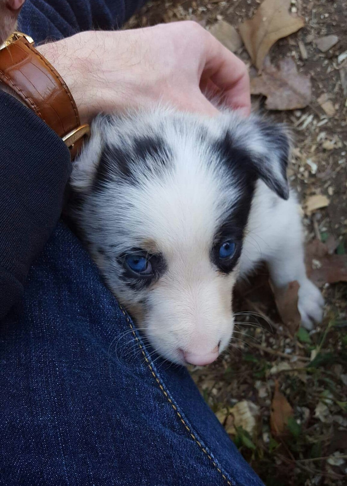
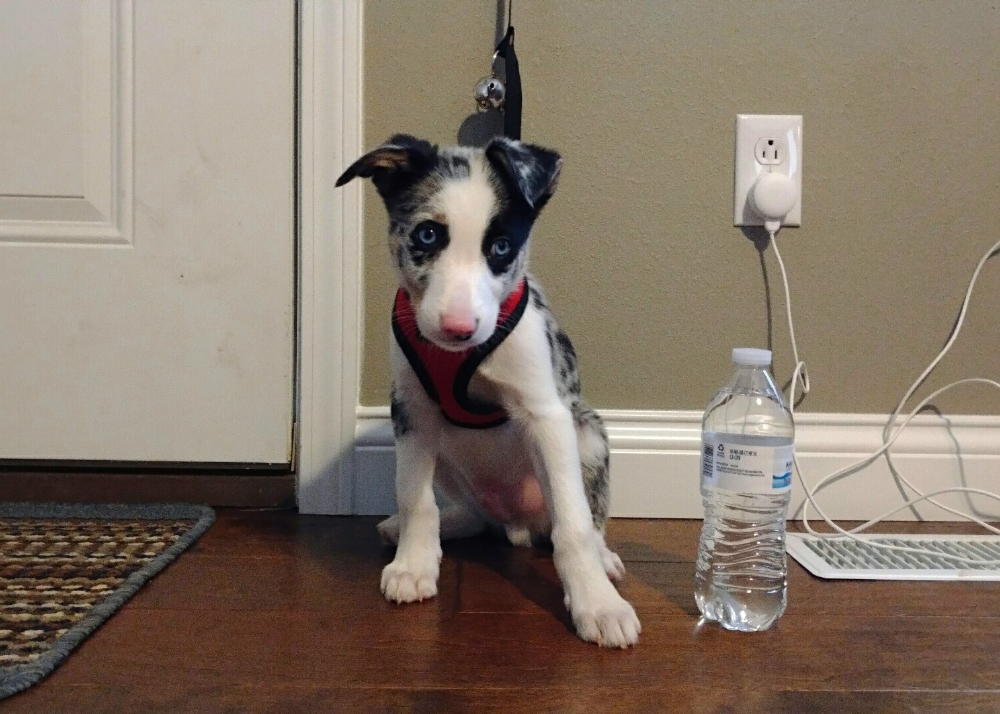
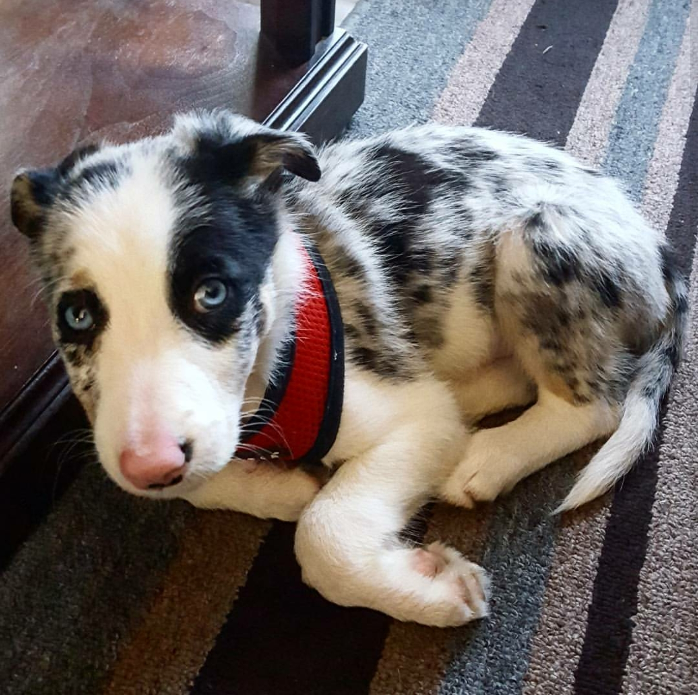
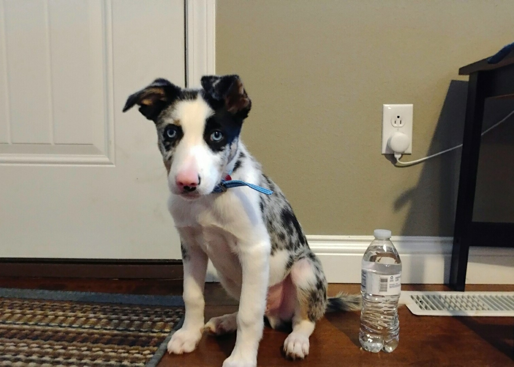
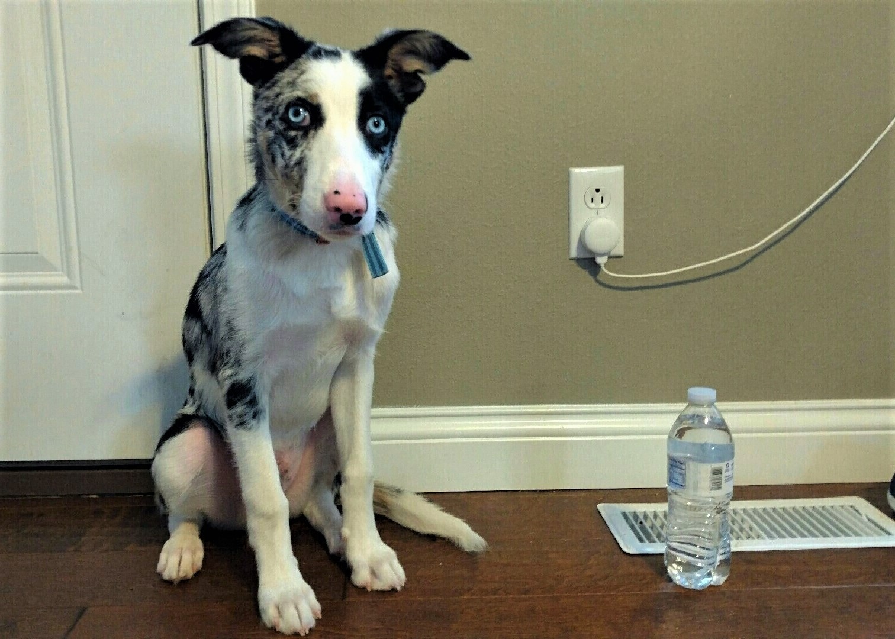
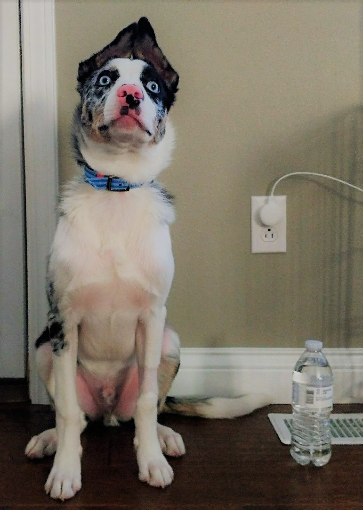
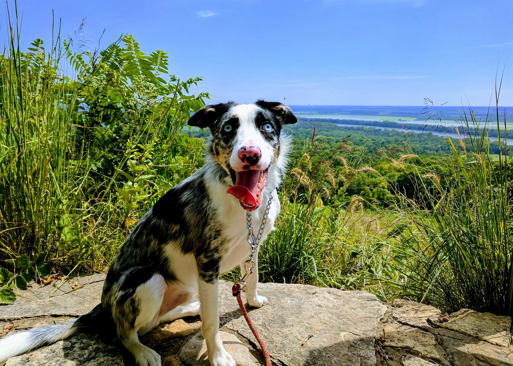
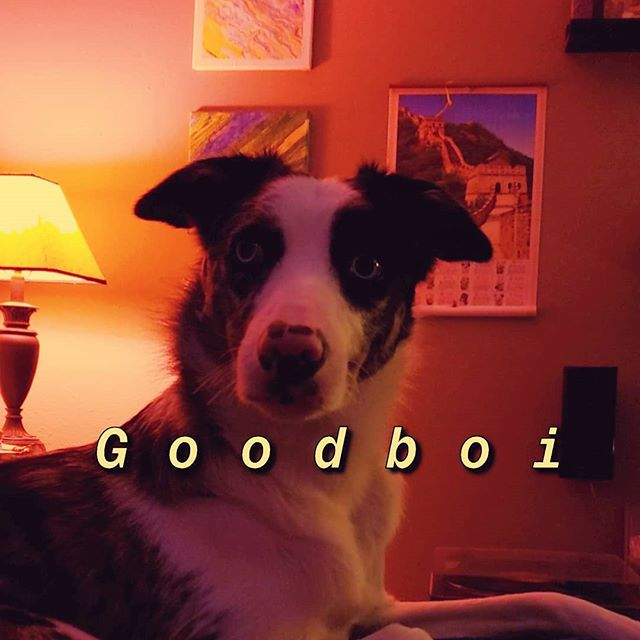

1 Month Old
Blessed upon this earth on September 12th, 2016, "Ollie" The Pup has a furry face and bright blue eyes.
Upon visiting the breeder's home/kennel in mid-October there was a flurry of activity with floofy little Border Collie younglings
nipping at your shoe laces. Ollie stood out for his calmness and desire to be held. It was probably just a sleepy day
because upon the passage of time his energy has become a staple of his character. He is 1 water bottle tall (this will make sense in a moment).

2 Months Old
It wasn't until a month later that Ollie moved in to our home. This is my roommate's dog legally just so we are clear! Ollie is much bigger already and
quite a whiney little creature upon arrival. Really from his perspective he had suddenly been taken from his dog family and was in an unknown place.
In the initial week he was dead set on trying to call out to his siblings for many hours each night. The shrill whining was so bad that one of my roommates went
to his parent's house for at least 1 night to get some kind of sleep. Ollie now seems to be 1 and 3/4 water bottles in height.


3 Months Old
At 3 months old Ollie is starting to bulk up with continued growth all around. He has calmed down when being crated overnight for sleep.
He despises being in his pen area while people are up and about. He has gained some height now being about 2 and 1/2 water battles tall.

4 Months Old
Keeping with the trend of growth, i'd say Ollie is over a half foot taller at 4 months! He's well over 3 water bottles tall now.
Ollie has now developed the pesky habit of chewing on the corner of the living room rug. He is ever so playful with toys and has learned
how to shake, high five, sit, and lay down.

5 Months Old
At this point Ollie has filled out in frame, and added a few more inches of height when sitting. With that extra ear perkiness Ollie is
clocking in at 4 water bottles tall. Uh oh, now Ollie likes to take the hand towel hanging on the oven door and play with it. Ollie's newest
trick is to stay.

Present Day
After the 5 month mark it seems like Ollie has reached his max size. He has come to develop quite the smattering of black spots on his
snoot. He doesn't beg for food but will give you some investigative sniffs and glares when you do have something tasty cooking. Ollie can be left
out and about alone over night and we won't have to worry about accidents on the floor, or anything items being torn up. By now he has learned how
to spin, give kisses, and put his snoot through your cupped hand when nicely asked to snoot. He is a "Goodboi".

